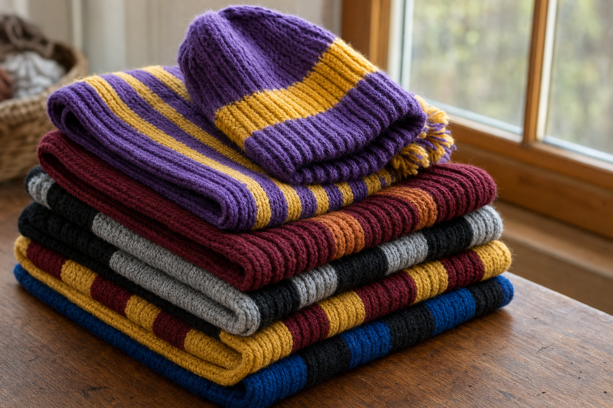

Cottage Crafts
Handmade in Bridgewater since 2002. Scarves knitted and hats hand-loomed in your school's colours, seasonal gifts for the house, and custom orders.
No set hours. Call, and Judy will come over and open the shop.
(540) 478-7973Bridgewater, Virginia 22812
She lives next door.
